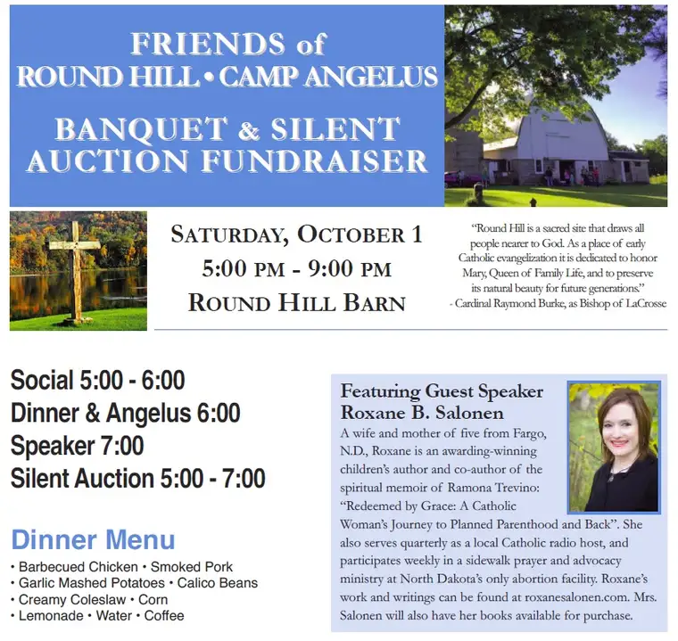

By the time you read this, assuming you’re reading on Friday morning, I’ll be heading out on foot with a group of 8th graders on a pilgrimage across town — over 11 miles in all — to spread the Good News.
They’ll do it by tromping through soggy, fall leaves and squished crab-apple skins, working their way from Holy Spirit Church in North Fargo to their home base at Shanley in South Fargo, taking turns carrying a heavy cross on their backs the entire duration, stopping at various locations only to rest briefly and pray, for all of you.
This will mark the forth time I’ve helped chaperone this event. It’s a journey I love so much, I signed up despite the fact that I’ll be leaving town immediately afterward to head to Durand, Wisconsin, where I’ll be speaking in a barn on Saturday.

I know, it sounds a little suspect right? But as far as I know, the barn at Round Hill contains no animals or barn smells. Rather, it’s on grounds that have been renovated for the purpose of bringing together Catholic families and youth, for the purpose of communing with God, each other, and to offer solace from the world.
I’m intrigued, and can’t wait to reach my destination. It’s going to be a long day with all that walking, followed by a fairly lengthy car trip. I’m grateful I’ll have a friend along to keep me company and my eyes peeled, especially through cities’ traffic around rush hour. There, we’ll stay in a guest house, and spend the day, preceding the event, enjoying the surroundings.
I’ll be giving a talk I presented here in Fargo back in June, “Discovering Mercy.” It’s one of my favorite talks and I’m thrilled to have a second chance to share it, especially now, as the Jubilee Year of Mercy comes to a close. I’ve learned so much and know that I’ll learn even more from sharing this with others.
More than anything, I look forward to meeting the good people of that area of Wisconsin. I’ve been impressed by what I’ve heard so far. This sounds like a very faith-filled community, and one looking for more ways of helping God grow His vineyard.
And speaking of that, I just need to pause a moment and give a ginormous thank you to the Big Guy. Times like this, I feel so abundantly blessed. To be part of sharing and delighting in the life of faith with others, far and near, is a tremendous blessing, and I don’t take these opportunities for granted. I am indebted to our loving God, and the places he’s brought me through the years. Best of all, He comes with me, wherever I go. He is a faithful companion, through all the thick and thin of life.
Q4U: What are some of the places of beauty and grace God has led you to?